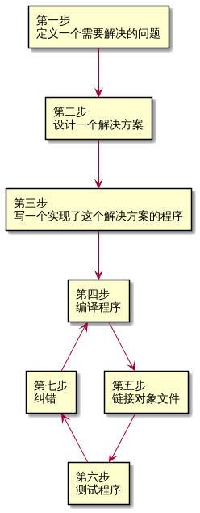

第零章第四节 C++ 开发简介¶
原文作者：Alex
首次发布：2007 年 5 月 27 日
最近更新：2020 年 2 月 9 日
译者：Karl Liu
翻译时间：2021 年 2 月 2 日
原文链接：https://www.learncpp.com/cpp-tutorial/introduction-to-cpp-development/
在我们可以开始跑我们的第一个程序之前，我们需要更细节地了解一下 C++ 程序是如何开发的。下面这张流程图简单描述了整个流程：

第一步：定义一个你想要解决的问题¶
这一步中你要问自己“什么”，你需要搞清楚你现在想要解决什么问题。想到你想要编程解决的问题可能是最容易的一步，也可能是最难的。但理论上来说这一步是最简单的。你只需要一个可以被良好定义的问题就可以继续了。
以下是一些例子：
“我想要写一个可以计算我所输入的若干数字的平均数的程序。”
“我想要写一个可以生成二维迷宫并让用户试着解决的程序。用户走到终点就算获胜。”
“我想要写一个可以从文件读取股票价格并预测涨跌的程序。”
第二步：决定你要怎么解决这个问题¶
这一步中你要问自己“如何”，你要决定你要怎么解决你在上一步中想到的问题。这一步也是在软件开发中最容易被忽略的。这一步的关键是你可能有很多种解决问题的途径——然而其中有些好，有些不好。一个程序员经常会在上一步中灵光一现，然后紧接着就开始写代码。这样常常会导致他产出不太好的那种解决方案。
通常，好的解决方案会有如下特征：
它们都很直白（不会过分复杂或者令人困惑）。
它们都有完整的文档（尤其是围绕一些假设或者限制）。
它们都是模块化的，这样每个部分都可以被复用或者单独修改而不影响其他部分。
它们都很健壮，可以在未预料到的事情发生的时候恢复或者提供有用的错误信息。
当你坐在电脑前直接开始编码的时候，你通常在想“我要做某件事”，然后你就会用一个最快的方式实现一个解决方案。这会让你写的程序非常脆弱，难以修改和扩展，或产生很多 bug（技术缺陷）。
题外话
bug（译注：这个词的本意是虫子）这个术语最早在 1870 年代出自 Thomas Edison（托马斯 爱迪生）！然而它在 1940 年代当工程师们发现早期的计算机被真的蛾子卡住并短路时才变得流行。无论是当时记录了错误的日志还是那只蛾子限制都被保存在 Smithsonian 美国历史博物馆中。
研究显示，程序员写程序初稿的时间只占 20%。剩下的 80% 被用在了维护上，它通常包括 纠错（Debugging）（去除 bug），为了适应新的环境进行更新（比如运行在一个操作系统的新版本上），增强功能（通过一些小该东来增加可用性或能力），或内部提升（增加可靠性或可维护性）。
因此，在一开始（你开始写代码之前）多花一点点时间是很值得的，想一想解决这个问题的最好的途径是什么，你做了什么假设，你对未来有什么打算，这样可以给你自己省下不少时间并减少后面的麻烦。
我们会在之后的教程里再仔细探讨如何高效地设计解决方案。
第三步：写程序¶
为了写程序，我们至少需要两个前提条件：首先我们要至少了解一种编程语言的，这也是本教程的目标；之后是需要一个文本编辑器。无论是什么文本编辑器都可以被用来写程序，就算是简易如 Windows 中的记事本或 Unix 下的 vi 和 pico 都是可以的。然而，我们强烈推荐你使用为编程设计的编辑器。如果你现在没有的话不要着急，我们会很快讲到怎么安装这样一个编辑器。
通常一个为编程设计的编辑器会有一些让编程变得更轻松的特性，比如：
行编号。行编号在编译器给出错误提示的时候会非常有帮助，通常编译器的错误提示长这样： 错误码/错误信息, 第 64 行. 如果没有行编号的话想要找到第 64 行就太麻烦了。
语法高亮和上色。语法高亮与上色可以让程序的不同部分有着不同的颜色，以便更容易地区分它们。这里是一个既带有行编号也带有语法高亮和上色的代码片段：
1 2 3 4 5 6 | #include <iostream>
int main() {
std::cout << "Colored text.";
return 0;
}
|
这个教程中的所有示例代码都会同时带有行编号和语法高亮，这样阅读器来会容易一些。
一个不容易混淆的字体。非编程字体经常让人分不清数字 0 和字母 O，或者数字 1 和字母 l（小写 L）和字母 I（大写 i）。一个好的编程字体可以让这些符号有足够明显的区别，以保证没人会用错。
在 C++ 里你的程序通常会被称作 名字.cpp，这里面的 名字 可以被程序名或者一个你自选的名字替换（译注：不要用中文命名自己的代码，本译文中从此之后不会再翻译文件名）。.cpp 后缀告诉编译器（和你）这是个 C++ 源代码文件，里面是 C++ 指令。需要注意的是有的人使用 .cc 作为后缀，但我们推荐你使用 .cpp。
最佳实践
将你的代码文件命名为 name.cpp。这里的 name 是你自己选择的，.cpp 表示这个文件是一个 C++ 源码文件。
另外值得一提的是，很多复杂的 C++ 程序有多个 .cpp 文件。即便大多数你一开始写的程序都是单文件的，一个程序也可以有上百个 .cpp 文件。
一但我们写出了自己的程序，接下来的步骤就是将它转化成一些可以运行的东西，然后康康它运行的怎么样！我们会在下一节讨论这些步骤（4 至 7）。